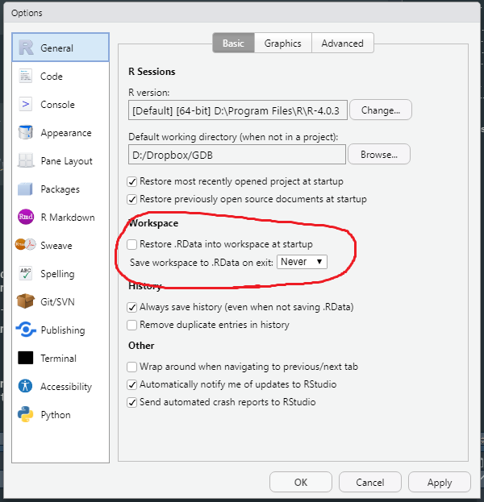

Updated 2021/04/30
Hard-coding indices to find the last word in the string is not robust coding practice. Here’s two better ways of doing that:
string = "This is a kind of a long string"
substr(string,26,31) # not good## [1] "string"substr(string,nchar(string)-5,nchar(string)) # still not good## [1] "string"spaces <- gregexpr(" ",string)[[1]]
substr(string,spaces[length(spaces)] + 1,nchar(string))## [1] "string"# good, but uses a function we don't know yet.
strsplit(string," ")[[1]][length(strsplit(string," ")[[1]])]## [1] "string"# easier, doesn't use substr (but substr is a dumb way to handle this anyway).Many ways of doing this. Here are some!
sequence <- paste(readLines("assignment2_sequence.txt")[1:5],collapse="")
sequence <- substr(sequence,regexpr("AUG",sequence)[[1]],nchar(sequence))
# I really compressed the above, but you all figured out this part pretty well.
aasequence = ""
index=1
while(index < nchar(sequence)) {
codon <- substr(sequence, index, index + 2)
if(codon == "AUG") {
aasequence = c(aasequence, "M")
} else if (codon == "UUC") {
aasequence = c(aasequence, "F")
} else if (codon == "CUU") {
aasequence = c(aasequence, "L")
} else if (codon == "CCA") {
aasequence = c(aasequence, "P")
} else if (codon == "ACC") {
aasequence = c(aasequence, "T")
} else if (codon == "GAU") {
aasequence = c(aasequence, "D")
} else if (codon == "CGA") {
aasequence = c(aasequence, "R")
} else if (codon == "UGA") {
aasequence = c(aasequence, "stop")
}
if (codon == "stop") { break }
index = index + 3 #this moves the index forward 3 places in the sequence
}
paste(aasequence[-1],collapse="") #why -1 here?## [1] "MDFRPFDRFPFTLTRFTFPFDLDFTRFDFT"# a shorter way, using the sub command!
aasequence = ""
index=1
while(index < nchar(sequence)) {
codon <- substr(sequence, index, index + 2)
codon <- sub("AUG", "M", codon)
codon <- sub("UUC", "F", codon)
codon <- sub("CUU", "L", codon)
codon <- sub("CCA", "P", codon)
codon <- sub("ACC", "T", codon)
codon <- sub("GAU", "D", codon)
codon <- sub("CGA", "R", codon)
codon <- sub("UGA", "stop", codon)
if (codon == "stop") { break }
aasequence <- c(aasequence,codon)
index = index + 3 #this moves the index forward 3 places in the sequence
}
paste(aasequence[-1],collapse="") #why -1 here?## [1] "MDFRPFDRFPFTLTRFTFPFDLDFTRFDFT"# mapping using indices!
aasequence = ""
index=1
while(index < nchar(sequence)) {
codon <- substr(sequence, index, index + 2)
ref_aa<-c(AUG="M", UUC="F", CUU="L", CCA="P", ACC="T", GAU="D", CGA="R", UGA="stop")
next_aa <- ref_aa[codon]
if (next_aa == "stop") { break }
aasequence <- c(aasequence,next_aa)
index = index + 3 #this moves the index forward 3 places in the sequence
}
paste(aasequence[-1],collapse="") #why -1 here?## [1] "MDFRPFDRFPFTLTRFTFPFDLDFTRFDFT"aasequence3 <- aasequence[-1]
# finally, using switch (which probably isn't as effective as using indices, but weirder so it's last)
aasequence = ""
index=1
while(index < nchar(sequence)) {
codon <- substr(sequence, index, index + 2)
next_aa <- switch(codon,
AUG="M",
UUC="F",
CUU="L",
CCA="P",
ACC="T",
GAU="D",
CGA="R",
UGA="stop")
if (next_aa == "stop") { break }
aasequence <- c(aasequence,next_aa)
index = index + 3 #this moves the index forward 3 places in the sequence
}
paste(aasequence[-1],collapse="") #why -1 here?## [1] "MDFRPFDRFPFTLTRFTFPFDLDFTRFDFT"The Book of R: chapter 10.2 and 10.3 (loops), 10.2.3 (apply functions)
Write conditional statement code that evaluates an amino acid’s physicochemical property and outputs the following, given a single letter amino acid code:
"Charged" for R, K, D, E
"Polar" for Q, N, H, S, T, Y, C
"Amphipathic" for W, Y, M
"Hydrophobic" for A, I, L, M, F, V, P, GAAmap <- list(
Charged=c("R","K","D","E"),
Polar=c("Q","N","H","S","T","Y","C"),
Amphipathic=c("W","Y","M"),
Hydrophobic=c("A","I","L","M","F","V","P","G")
)
AA <- "G"
if (AA %in% c("R","K","D","E")) {
property <- "Charged"
} else if (AA %in% AAmap$Polar) {
property <- "Polar"
} else if (AA %in% AAmap[["Amphipathic"]]) {
propery <- "Amphipathic"
} else if ( AA %in% AAmap$Hydrophobic) {
property <- names(AAmap)[4] # this is just a convoluted way of doing the same as above.
} else {
stop(paste(AA,"is not a recognized amino acid."))
# always good to have an "else" in case none of the elseifs catch your input.
}
property## [1] "Hydrophobic"# aside
1 %in% 1:5## [1] TRUEany(1 == 1:5)## [1] TRUE{
print("hi")
print("you")
}## [1] "hi"
## [1] "you"# A more "R-like" way of doing this:
property <- names(AAmap)[sapply(AAmap,function(X) AA %in% X)]
property## [1] "Hydrophobic"vectorVariable = c(1,-2,3,-5)
#Let's find all of the positive numbers
if(vectorVariable[1]>0) {
print("Positive number")
}## [1] "Positive number"if(vectorVariable[2]>0) {
print("Positive number")
}
if(vectorVariable[3]>0) {
print("Positive number")
}## [1] "Positive number"if(vectorVariable[4]>0) {
print("Positive number")
}
#Problems with this approach:
#1. There is a lot of repeated code
#2. What happens if the vector is really long?#Here is the same problem, but solved using a for loop
vectorVariable = c(1,-2,3,-5)
for (value in vectorVariable) {
if (value > 0) {
print(value)
}
}## [1] 1
## [1] 3#What is happening here? Let's "unroll" the loop
vectorVariable = c(1,-2,3,-5)
value = vectorVariable[1]
if (value > 0) {
print(value)
}## [1] 1value = vectorVariable[2]
if (value > 0) {
print(value)
}
value = vectorVariable[3]
if (value > 0) {
print(value)
}## [1] 3value = vectorVariable[4]
if (value > 0) {
print(value)
}
#Note: 'value' is just a variable, so can have any name of a variable
#The for loop automatically repeated the same code inside the loop, automatically updating the value variable to the next element of the vector, so it could "loop" through all the vector elements
#here is an idiomatic way to write a for loop that executes a specific number of times:
sum=0
for (i in 1:100) {
sum = sum + i; #note: ; indicates the end of a statement, but it is optional in R
}
print (sum)## [1] 5050#this is the same as sum(1:100) - in this case, R has a 'high level' command that does the same thing. Internally, sum() uses a loop to do its job.vectorVariable = c(1,-2,3,-5)
i=1
while (i <= length(vectorVariable)) {
if (vectorVariable[i] > 0) {
print(vectorVariable[i])
}
i = i + 1
}## [1] 1
## [1] 3#What is happening here? Let's "unroll" the loop
vectorVariable = c(1,-2,3,-5)
i=1 #i is an index to keep track of our position in the vector. i=1 means to start with the first element of the vector.
if (i <= length(vectorVariable)) { #if i is smaller or equal to the vector length, then we can run our code
if (vectorVariable[i] > 0) {
print(vectorVariable[i])
}
i = i + 1 #move to the next element - i now equal to 2
}## [1] 1if (i <= length(vectorVariable)) { #if i is smaller or equal to the vector length, then we can run our code
if (vectorVariable[i] > 0) {
print(vectorVariable[i])
}
i = i + 1 #move to the next element - i now equal to 3
}
if (i <= length(vectorVariable)) { #if i is smaller or equal to the vector length, then we can run our code
if (vectorVariable[i] > 0) {
print(vectorVariable[i])
}
i = i + 1 #move to the next element - i now equal to 4
}## [1] 3if (i <= length(vectorVariable)) { #if i is smaller or equal to the vector length, then we can run our code
if (vectorVariable[i] > 0) {
print(vectorVariable[i])
}
i = i + 1 #move to the next element - i now equal to 5
}
if (i <= length(vectorVariable)) { #i is no longer smaller than the vector length, so don't run the code
if (vectorVariable[i] > 0) {
print(vectorVariable[i])
}
i = i + 1
}
#The while and for loops can do the same thing. Sometimes it is more convenient to write a loop one way or anotherfor (i in vectorVariable) {
if (i > 0) {
print(i)
}
}## [1] 1
## [1] 3sum=0
for (i in 1:100) {
sum = sum + i
}
print (sum)## [1] 5050#same as
i=1
sum=0
while (i <= 100) {
sum = sum + i
i = i + 1
}
print (sum)## [1] 5050vectorVariable = c(1,-2,3,-5)
i=1
while (vectorVariable[i] != 3) {
print(vectorVariable[i])
i = i + 1
}## [1] 1
## [1] -2vectorVariable = c(1,-2,3,-5)
i=1
while (i <= length(vectorVariable)) {
if (vectorVariable[i] > 0) {
print(vectorVariable[i])
}
#i = i + 1 #We never update the loop index, so i will never be greater than the vector length, so the loop will never end
}
# Not actually going to run this one, or the code would never knit!Remember to count the amino acids in a protein sequence? Let’s do it in a different way here, using loops and named vectors (could also use names in lists)
Here again the protein sequence:
> sp|P04637|P53_HUMAN Cellular tumor antigen p53 OS=Homo sapiens
MEEPQSDPSVEPPLSQETFSDLWKLLPENNVLSPLPSQAMDDLMLSPDDIEQWFTEDPGPDEAPRMPEAAPPVAPAPAA
PTPAAPAPAPSWPLSSSVPSQKTYQGSYGFRLGFLHSGTAKSVTCTYSPALNKMFCQLAKTCPVQLWVDSTPPPGTRVR
AMAIYKQSQHMTEVVRRCPHHERCSDSDGLAPPQHLIRVEGNLRVEYLDDRNTFRHSVVVPYEPPEVGSDCTTIHYNYM
CNSSCMGGMNRRPILTIITLEDSSGNLLGRNSFEVRVCACPGRDRRTEEENLRKKGEPHHELPPGSTKRALPNNTSSSP
QPKKKPLDGEYFTLQIRGRERFEMFRELNEALELKDAQAGKEPGGSRAHSSHLKSKKGQSTSRHKKLMFKTEGPDSDUse a for loop and the command strplit to get each amino acid of the sequence to count the occurrences.
One easy way is to first generate a vector (or list) that has named rows, named for each amino acid, such that, for instance, you keep the number of occurrences of Alanines as occ_aa[“A”]. To start, you have to set all the elements of the vector to zero (R has a built in vector called “LETTERS” that contains the whole alphabet)
# This exercise isn't in your version of the notebook, but whatever...
# First I copied that FASTA-formatted sequence into a text file, so we could load it easily.
inputFA <- readLines("mod5exercise.fa")
# Now we do it the very un-R-like loop way:
AAcounts <- integer(length=length(LETTERS))
names(AAcounts) <- LETTERS
for (LINE in inputFA) {
lineAAs <- strsplit(LINE,"")[[1]] #the [[1]] is to quickly grab the first (and only) list element
if (lineAAs[1] == ">") { next } # skip the header line
for (AA in lineAAs) {
AAcounts[AA] <- AAcounts[AA] + 1
}
}
AAcounts## A B C D E F G H I J K L M N O P Q R S T U V W X Y Z
## 24 0 10 20 30 11 23 12 8 0 20 32 12 14 0 45 15 26 38 22 0 18 4 0 9 0# of course, vectorization is way more R-appropriate:
AllTheAAs <- strsplit(inputFA[!grepl("^>",inputFA)],"")
table(unlist(AllTheAAs))##
## A C D E F G H I K L M N P Q R S T V W Y
## 24 10 20 30 11 23 12 8 20 32 12 14 45 15 26 38 22 18 4 9# Are they the same?
all(AAcounts[AAcounts > 0] == table(unlist(AllTheAAs)))## [1] TRUERead the “gene_condition_source_id.txt” file dataFrame = read.table(“gene_condition_source_id.txt”, header=TRUE, sep=“, fill=TRUE, comment.char =”“, quote =”")
Using a for loop, loop over all the rows of “gene_condition_source_id.txt” and find all diseases linked to TP53
Do the same thing, but first read in the file again, but set “stringsAsFactors=F” as an argument to read.table()
db <- read.table("D:/Dropbox/TA_MMG1002H_2021/Week1/gene_condition_source_id.txt",
header=T,sep="\t",quote="",comment.char="")
system.time({
disease_list1 <- db$DiseaseName[db$AssociatedGenes == "TP53"]
})## user system elapsed
## 0 0 0system.time({
disease_list <- c()
for (X in 1:nrow(db)) {
if (db[X,"AssociatedGenes"] == "TP53") {
# disease_list <- append(disease_list,db[X,"DiseaseName"])
disease_list <- c(disease_list,db[X,"DiseaseName"])
}
}
})## user system elapsed
## 0.08 0.01 0.09all(disease_list1 == disease_list)## [1] TRUEKey Programming Concept in R (but not in many other programming languages)
vectorVariable = c(1,-2,3,-4)
vectorVariable## [1] 1 -2 3 -4vectorVariable * 5## [1] 5 -10 15 -20vectorVariable * vectorVariable## [1] 1 4 9 16sum(vectorVariable)## [1] -2#similarly, you can use: prod(), mean(), sd(), min(), max()
stringVariable = c("first", "last")
stringVariable## [1] "first" "last"paste(stringVariable, "name")## [1] "first name" "last name"paste(stringVariable, c("name1", "name2")) #note how vectorization applies the transformation to all strings in the string vector## [1] "first name1" "last name2"vectorVariable>0## [1] TRUE FALSE TRUE FALSEvectorVariable==0## [1] FALSE FALSE FALSE FALSEvectorVariable<0## [1] FALSE TRUE FALSE TRUEvectorVariable[c(T,F,T,F)]## [1] 1 3vectorVariable[vectorVariable>0]## [1] 1 3ifelse(vectorVariable>0,"positive number", "negative number")## [1] "positive number" "negative number" "positive number" "negative number"#remember: for loop to find positive numbers in a vector
vectorVariable = c(1,-2,3,-5)
for (value in vectorVariable) {
if (value > 0) {
print(value)
}
}## [1] 1
## [1] 3#the vectorization way of doing this is:
vectorVariable[vectorVariable>0]## [1] 1 3#much easier!name = c("patient1", "patient2", "patient3")
name## [1] "patient1" "patient2" "patient3"age = c(46, 49, 50)
age## [1] 46 49 50smoker = c(T, F, T)
smoker## [1] TRUE FALSE TRUEpatientRecords = data.frame(name, age, smoker, stringsAsFactors=F)
#What is going on here?
patientRecords$age>48## [1] FALSE TRUE TRUEpatientRecords[patientRecords$age>48] #oopspatientRecords[ , patientRecords$age>48] #oopspatientRecords[patientRecords$age>48 , ]#Create a new matrix with number 1 to 30
x = matrix(1:30, nrow=5, ncol=6)
x## [,1] [,2] [,3] [,4] [,5] [,6]
## [1,] 1 6 11 16 21 26
## [2,] 2 7 12 17 22 27
## [3,] 3 8 13 18 23 28
## [4,] 4 9 14 19 24 29
## [5,] 5 10 15 20 25 30#Sum the rows
apply(x, MARGIN=1, FUN=sum)## [1] 81 87 93 99 105#or equivalently
apply(x, 1, sum)## [1] 81 87 93 99 105#Sum the columns
apply(x, 2, sum)## [1] 15 40 65 90 115 140#Compute the mean for all the columns in a data.frame (which is also a list)
lapply(patientRecords, mean)## Warning in mean.default(X[[i]], ...): argument is not numeric or logical:
## returning NA## $name
## [1] NA
##
## $age
## [1] 48.33333
##
## $smoker
## [1] 0.6666667#You may see lots of other apply functions in R code e.g. mapply, sapply, tapply, vapplyAs I said in class, I expect to unzip the submission and see a directory (folder) with your name or some identifying feature in the name, containing all the input data needed to run your R scripts, individual R scripts for each part of the assignments, and for safety’s sake any output files your R scripts are supposed to generate. If they aren’t supposed to generate an output file, no need to include one. Please don’t paste the R console output into a text file and submit that, I need an R script that I can just open and run without errors. Please do run your scripts in a fresh R session to ensure they run without errors. Hint: see below for how to set up RStudio such that when you open a new session, you don’t keep all the junk from your last session (which is dangerous when trying to write reproducible code):

Finally, you should now be skilled enough in R that you know how to write code that will work on data with the same format but different values. In other words, don’t hard-code things in your script. If you’re asked to find the name of the smallest gene, don’t print("the_gene_name"), do something like print(gene_names[which.min(gene_lengths)]), so that if I run the code on data with an even smaller gene, it will still give the correct answer.
Part 1b: “For exercise, do it both using a for-loop, as well as using an R built-in function.” In other words, we want you to answer this question two ways - once slowly and painfully by writing your own for loop, then check that you got it right by doing it the easy way using existing R functions.
Part 1c: Be careful how you find the W and C strandedness. Part 1d: The “length” column of the database is the ORF length.
Part 2b: The data is reporting phenotypes of gene deletion experiments, and “inviable” is a specific word used to describe a phenotype where the yeast does not survive if the gene is deleted - the gene is essential for viability.
Part 2c: Counting interactions is hard. Don’t just count A of an A-B interaction, but also be careful not to double count situations where A-B and B-A are recorded.
Part 2d: A classic challenge in bioinformatics is when one database contains genes that are missing in another database. If you treat these as zeroes, you’ll skew your calculations (such as mean). Best to either filter them out, or record missing data as NA (see ?mean(...,na.rm=T)).